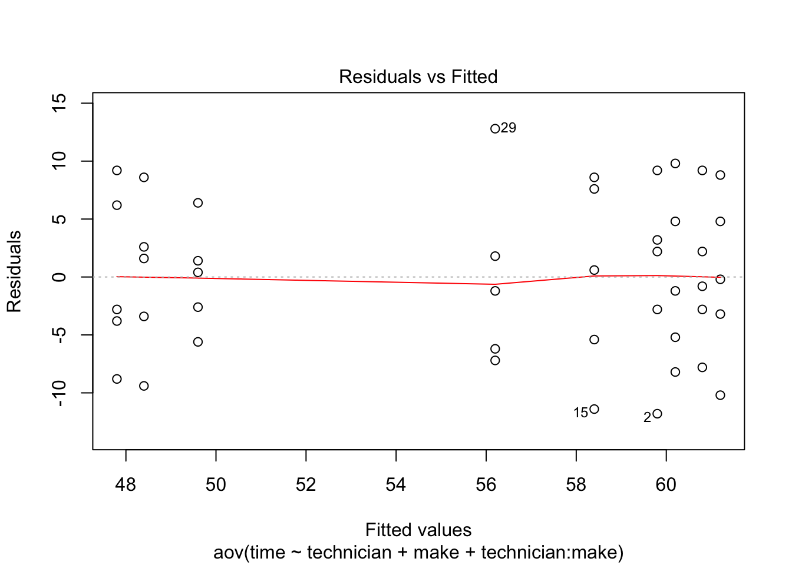
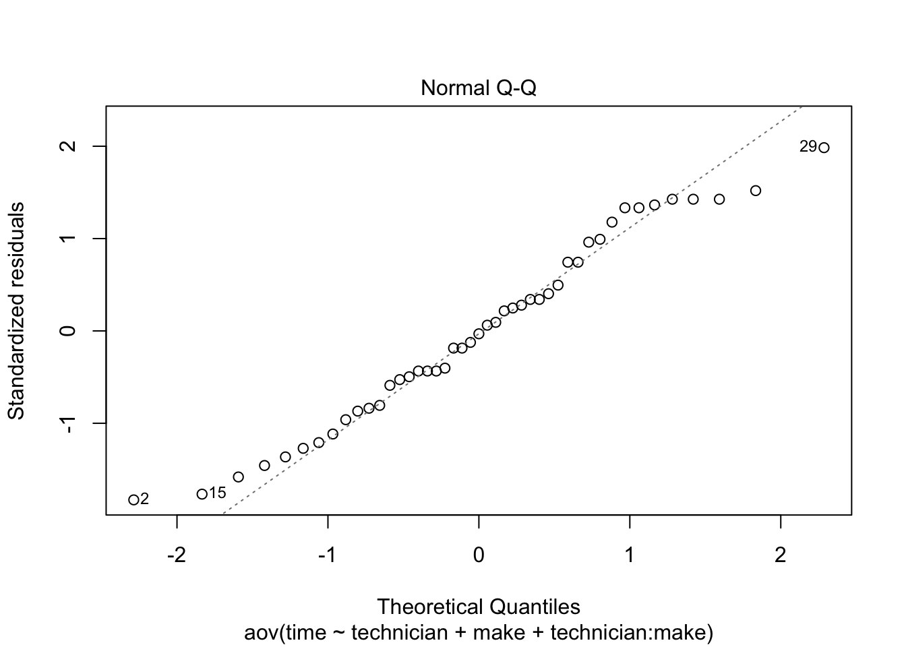
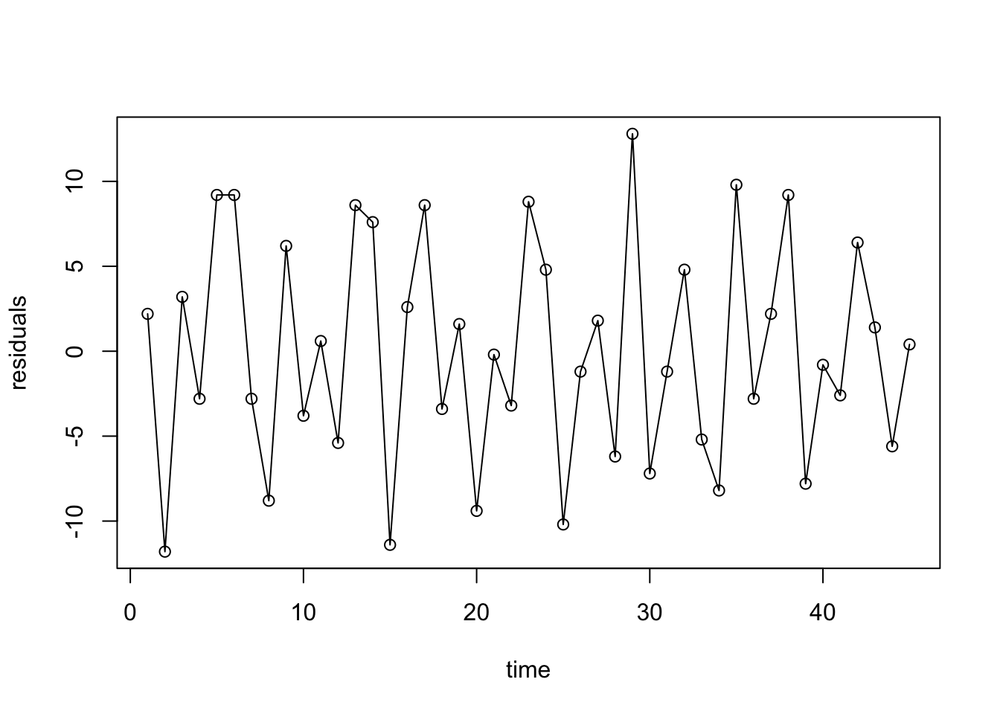
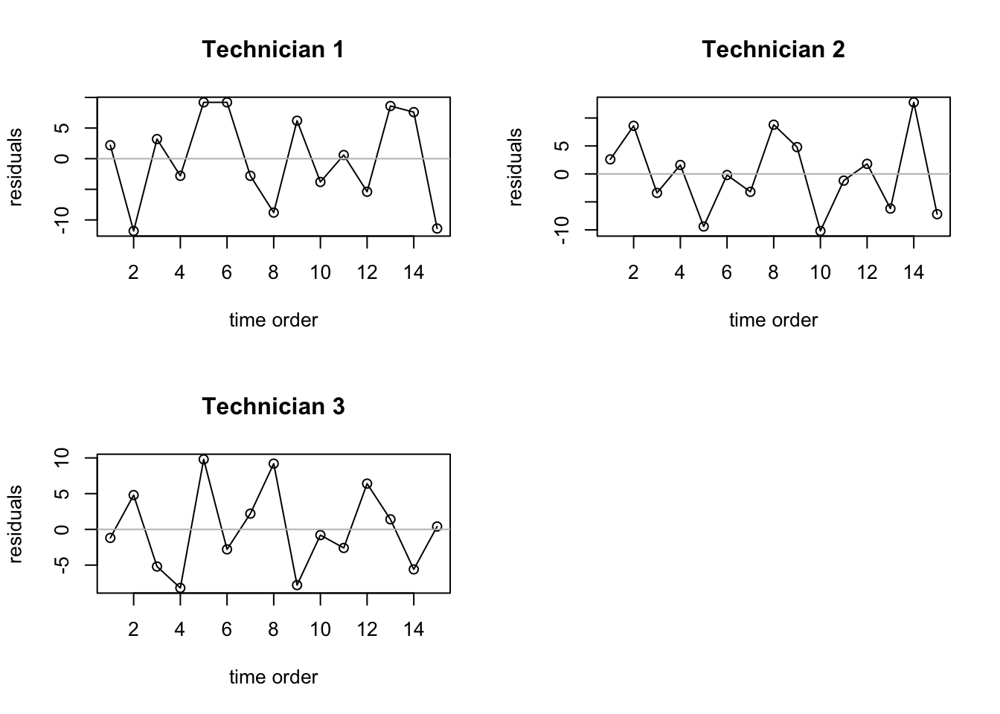
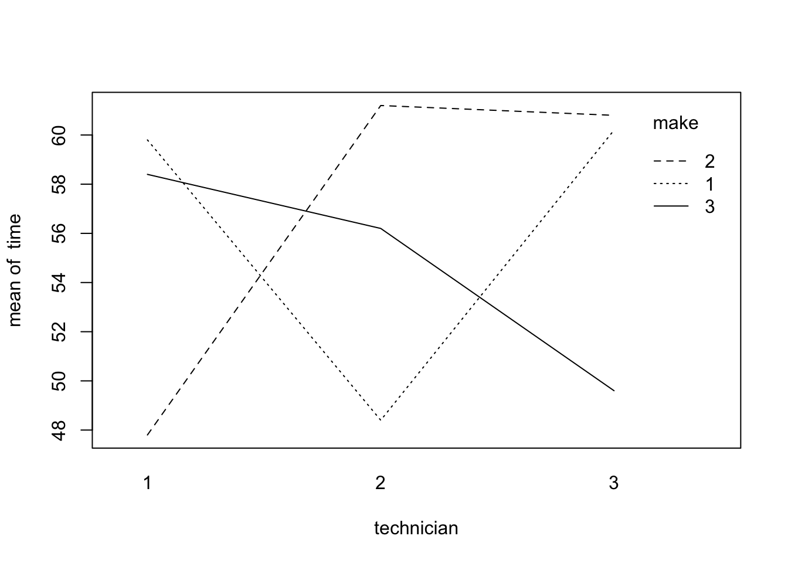

required library
library(plyr)
library(lmtest)
Load data
dt <- read.table("./data/CH19PR16.txt",
col.names = c("time", "technician", "make", "disk_drive"))
dt[,2] = as.factor(dt[,2])
dt[,3] = as.factor(dt[,3])
dt[,4] = as.factor(dt[,4])
problem 19.16 a
fitted_values = ddply(dt, .(technician, make), summarize,
mean=mean(time))
fitted_values
## technician make mean
## 1 1 1 59.8
## 2 1 2 47.8
## 3 1 3 58.4
## 4 2 1 48.4
## 5 2 2 61.2
## 6 2 3 56.2
## 7 3 1 60.2
## 8 3 2 60.8
## 9 3 3 49.6
problem 19.16 b
anova2way = aov(time~technician+make+technician:make, data=dt)
technician = rep(c("technician 1", "technician 2", "technician 3"), each=15)
make = rep(rep(c("make 1", "make 2", "make 3"), each=5), 3)
res=data.frame(technician, make, residuals=anova2way$residuals)
res
## technician make residuals
## 1 technician 1 make 1 2.2
## 2 technician 1 make 1 -11.8
## 3 technician 1 make 1 3.2
## 4 technician 1 make 1 -2.8
## 5 technician 1 make 1 9.2
## 6 technician 1 make 2 9.2
## 7 technician 1 make 2 -2.8
## 8 technician 1 make 2 -8.8
## 9 technician 1 make 2 6.2
## 10 technician 1 make 2 -3.8
## 11 technician 1 make 3 0.6
## 12 technician 1 make 3 -5.4
## 13 technician 1 make 3 8.6
## 14 technician 1 make 3 7.6
## 15 technician 1 make 3 -11.4
## 16 technician 2 make 1 2.6
## 17 technician 2 make 1 8.6
## 18 technician 2 make 1 -3.4
## 19 technician 2 make 1 1.6
## 20 technician 2 make 1 -9.4
## 21 technician 2 make 2 -0.2
## 22 technician 2 make 2 -3.2
## 23 technician 2 make 2 8.8
## 24 technician 2 make 2 4.8
## 25 technician 2 make 2 -10.2
## 26 technician 2 make 3 -1.2
## 27 technician 2 make 3 1.8
## 28 technician 2 make 3 -6.2
## 29 technician 2 make 3 12.8
## 30 technician 2 make 3 -7.2
## 31 technician 3 make 1 -1.2
## 32 technician 3 make 1 4.8
## 33 technician 3 make 1 -5.2
## 34 technician 3 make 1 -8.2
## 35 technician 3 make 1 9.8
## 36 technician 3 make 2 -2.8
## 37 technician 3 make 2 2.2
## 38 technician 3 make 2 9.2
## 39 technician 3 make 2 -7.8
## 40 technician 3 make 2 -0.8
## 41 technician 3 make 3 -2.6
## 42 technician 3 make 3 6.4
## 43 technician 3 make 3 1.4
## 44 technician 3 make 3 -5.6
## 45 technician 3 make 3 0.4
problem 19.16 c
Departures that can be studies * Nonconstancy of error variance * Nonindependency of error items * Outliers * Omission of important explanatory variables * Nonnormality of error terms
## plot residuals vs fitted value
plot(anova2way, which=1)

problem 19.16 d
- Yes. the normality assumption appear to be reasonable here.
- Normal probability plot
plot(anova2way, which=2)

- Correlation coefficient = 0.9889246
lm.fit = lm(time~technician+make+technician:make, data=dt)
StdErr = summary(lm.fit)$sigma
n = length(res$residuals)
ExpVals = sapply(1:n, function(k) StdErr*qnorm((k-.375)/(n+.25)) )
r = cor(ExpVals, sort(res$residuals))
r
## [1] 0.9889246
problem 19.16 e
- Residual sequence plots the residual sequence plot
plot(res$residuals, type="o", xlab="time", ylab="residuals")

par(mfrow=c(2,2))
plot(res$residuals[1:15], type="o", xlab="time order", ylab="residuals", main="Technician 1")
abline(h=0, col="gray")
plot(res$residuals[16:30], type="o", xlab="time order", ylab="residuals", main="Technician 2")
abline(h=0, col="gray")
plot(res$residuals[31:45], type="o", xlab="time order", ylab="residuals", main="Technician 3")
abline(h=0, col="gray")

- All three plots show a random pattern. The residuals are not serially correlated.
problem 19.17 a
Yes. Significant factor effect exists. The lines are not parallel to each other. There is a strong interaction effect between technician and make.
technician = dt$technician
make = dt$make
time = dt$time
interaction.plot(technician, make, time)

problem 19.17 b
Yes. the interaction term accounts for most of the total variability.
summary(anova2way)
## Df Sum Sq Mean Sq F value Pr(>F)
## technician 2 24.6 12.29 0.236 0.790779
## make 2 28.3 14.16 0.272 0.763283
## technician:make 4 1215.3 303.82 5.841 0.000994 ***
## Residuals 36 1872.4 52.01
## ---
## Signif. codes: 0 '***' 0.001 '**' 0.01 '*' 0.05 '.' 0.1 ' ' 1
problem 19.17 c
- alternatives
- H0: coefficients of all interaction terms equal zero
Ha: not all coefficients of all interaction terms equal zero
- F_star = 303.82/52.01 = 5.841569
for alpha=0.01, F(0.99; 4, 36) = 3.890308
qf(0.99, 4, 36)
## [1] 3.890308
- decision
- Conclude H0 if F_star > F(0.99; 4, 36)
- Conclude Ha if F_star < F(0.99; 4, 36)
- since F_star = 5.841569 > F(0.99; 4, 36) = 3.890308, conclude Ha.
- P value = 0.000994
summary(anova2way)[[1]]$Pr[3]
## [1] 0.0009941068
problem 19.17 d
main effect from technician
- alternatives
- H0: all alpha equal zero
- Ha: not all alpha equal zero
- F_star = 12.29/52.01 = 0.2363007
- for alpha=0.01, F(0.99; 2, 36) = 5.247894
qf(.99, 2, 36)
## [1] 5.247894
decision + Conclude H0 if F_star > F(0.99; 2, 36) + Conclude Ha if F_star < F(0.99; 2, 36) * since F_star = 0.2363007 < F(0.99; 2, 36) = 5.247894, conclude H0. * P value = 0.7907788
summary(anova2way)[[1]]$Pr[1]
## [1] 0.7907788
main effect from make
- alternatives
- H0: all alpha equal zero
- Ha: not all alpha equal zero
- F_star = 14.16/52.01 = 0.2722553
- for alpha=0.01, F(0.99; 2, 36) = 5.247894
qf(.99, 2, 36)
## [1] 5.247894
- decision
- Conclude H0 if F_star > F(0.99; 2, 36)
- Conclude Ha if F_star < F(0.99; 2, 36)
- since F_star = 0.2722553 < F(0.99; 2, 36) = 5.247894, conclude H0.
- P value = 0.7632826
summary(anova2way)[[1]]$Pr[2]
## [1] 0.7632826
It is meaningful to test for main effect when the interaction effect is included in the model.
problem 19.17 e
- upper bound = 1-(1-0.01)(1-0.01)(1-0.01) = 0.029701
problem 19.17 f
- yes. the p value for interaction item is less than 0.05, which indicates that there is a significant interaction effect. While the main effects are not significant.
problem 19.33 a
µ11 = [51.02908, 68.57092]
summary(anova2way)[[1]][3][4,]
## [1] 52.01111
- n = 5
- s{Y11.} = MSE/n = 3.225213
- t(0.995; 36) = 2.719485
qt(.995, 36)
## [1] 2.719485
fitted_values$mean[1]
## [1] 59.8
- µ11 = [Y11-t(0.995; 36)*s{Y11.}, Y11+t(0.995; 36)*s{Y11.}]
- Y11-t(0.995; 36)*s{Y11.} = 59.8 - 2.719485*3.225213 = 51.02908
- Y11+t(0.995; 36)*s{Y11.} = 59.8 + 2.719485*3.225213 = 68.57092
problem 19.33 b
- s{D_hat} = (2*MSE/n)^0.5 = (2*52.01/5)^.5 = 4.56114
- D_hat = µ22 - µ21 = 61.2 - 48.4 = 12.8
## µ22
fitted_values$mean[5]
## [1] 61.2
## µ21
fitted_values$mean[4]
## [1] 48.4
qt(0.995, 36)
## [1] 2.719485
- 99% confidence interval = [D_hat - t(0.995; 36) * s{D_hat}, D_hat + t(0.995; 36) * s{D_hat}]
- 99% confidence interval = [0.3960482, 25.20395]
- explanation: there is a 99% chance that the difference between the average number of minitues needed by technician 2 and technician 1 to repaire make 1 of disc drive will be located within [0.3960482, 25.20395]. And technician 2 will need more time to repair the same make of disc drive.
problem 19.33 c
Confidence intervals = [D - t(0.99-0.1/26; 36)s{D}, D + t(0.99-0.1/26; 36)s{D}]
d = c(12, 1.4, -10.6, -12.6, -7.8, 5, -0.6, 10.6, 11.2)
s = 4.56114
t = 2.51104
ci = data.frame(lower = d-s*t, upper = d+s*t)
rownames(ci) = paste("D", 1:9, sep='')
ci
## lower upper
## D1 0.546795 23.453205
## D2 -10.053205 12.853205
## D3 -22.053205 0.853205
## D4 -24.053205 -1.146795
## D5 -19.253205 3.653205
## D6 -6.453205 16.453205
## D7 -12.053205 10.853205
## D8 -0.853205 22.053205
## D9 -0.253205 22.653205
- summary:
- for technician 1, the make 2 is the lowest
- for technician 2, the make 1 is the lowest
- for technician 3, the make 3 is the lowest
Copyright © 2017 Ming Chen & Wenqiang Feng. All rights reserved.